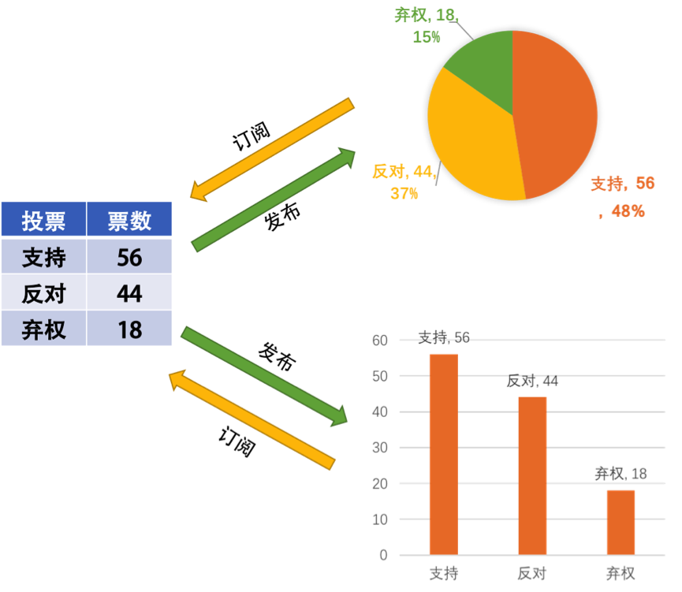

- 000 开篇词 洞悉技术的本质，享受科技的乐趣.md.html
- 001 程序员如何用技术变现（上）.md.html
- 002 程序员如何用技术变现（下）.md.html
- 003 Equifax信息泄露始末.md.html
- 004 从Equifax信息泄露看数据安全.md.html
- 005 何为技术领导力.md.html
- 006 如何拥有技术领导力.md.html
- 007 推荐阅读：每个程序员都该知道的事.md.html
- 008 Go语言，Docker和新技术.md.html
- 009 答疑解惑：渴望、热情和选择.md.html
- 010 如何成为一个大家愿意追随的Leader？.md.html
- 011 程序中的错误处理：错误返回码和异常捕捉.md.html
- 012 程序中的错误处理：异步编程和最佳实践.md.html
- 013 魔数 0x5f3759df.md.html
- 014 推荐阅读：机器学习101.md.html
- 015 时间管理：同扭曲时间的事儿抗争.md.html
- 016 时间管理：投资赚取时间.md.html
- 017 故障处理最佳实践：应对故障.md.html
- 018 故障处理最佳实践：故障改进.md.html
- 019 答疑解惑：我们应该能够识别的表象和本质.md.html
- 020 分布式系统架构的冰与火.md.html
- 021 从亚马逊的实践，谈分布式系统的难点.md.html
- 022 分布式系统的技术栈.md.html
- 023 分布式系统关键技术：全栈监控.md.html
- 024 分布式系统关键技术：服务调度.md.html
- 025 分布式系统关键技术：流量与数据调度.md.html
- 026 洞悉PaaS平台的本质.md.html
- 027 推荐阅读：分布式系统架构经典资料.md.html
- 028 编程范式游记（1）- 起源.md.html
- 029 编程范式游记（2）- 泛型编程.md.html
- 030 编程范式游记（3） - 类型系统和泛型的本质.md.html
- 031 Git协同工作流，你该怎样选.md.html
- 032 推荐阅读：分布式数据调度相关论文.md.html
- 033 编程范式游记（4）- 函数式编程.md.html
- 034 编程范式游记（5）- 修饰器模式.md.html
- 035 编程范式游记（6）- 面向对象编程.md.html
- 036 编程范式游记（7）- 基于原型的编程范式.md.html
- 037 编程范式游记（8）- Go 语言的委托模式.md.html
- 038 编程范式游记（9）- 编程的本质.md.html
- 039 编程范式游记（10）- 逻辑编程范式.md.html
- 040 编程范式游记（11）- 程序世界里的编程范式.md.html
- 041 弹力设计篇之“认识故障和弹力设计”.md.html
- 042 弹力设计篇之“隔离设计”.md.html
- 043 弹力设计篇之“异步通讯设计”.md.html
- 044 弹力设计篇之“幂等性设计”.md.html
- 045 弹力设计篇之“服务的状态”.md.html
- 046 弹力设计篇之“补偿事务”.md.html
- 047 弹力设计篇之“重试设计”.md.html
- 048 弹力设计篇之“熔断设计”.md.html
- 049 弹力设计篇之“限流设计”.md.html
- 050 弹力设计篇之“降级设计”.md.html
- 051 弹力设计篇之“弹力设计总结”.md.html
- 052 区块链技术 - 区块链的革命性及技术概要.md.html
- 053 区块链技术 - 区块链技术细节 - 哈希算法.md.html
- 054 区块链技术 - 区块链技术细节 - 加密和挖矿.md.html
- 055 区块链技术 - 去中心化的共识机制.md.html
- 056 区块链技术 - 智能合约.md.html
- 057 区块链技术 - 传统金融和虚拟货币.md.html
- 058 管理设计篇之分布式锁.md.html
- 059 管理设计篇之配置中心.md.html
- 060 管理设计篇之边车模式.md.html
- 061 管理设计篇之服务网格.md.html
- 062 管理设计篇之网关模式.md.html
- 063 管理设计篇之部署升级策略.md.html
- 064 性能设计篇之缓存.md.html
- 065 性能设计篇之异步处理.md.html
- 066 性能设计篇之数据库扩展.md.html
- 067 性能设计篇之秒杀.md.html
- 068 性能设计篇之边缘计算.md.html
- 069 程序员练级攻略（2018）：开篇词.md.html
- 070 程序员练级攻略（2018）：零基础启蒙.md.html
- 071 程序员练级攻略（2018）：正式入门.md.html
- 072 程序员练级攻略（2018）：程序员修养.md.html
- 073 程序员练级攻略（2018）：编程语言.md.html
- 074 程序员练级攻略：理论学科.md.html
- 075 程序员练级攻略（2018）：系统知识.md.html
- 076 程序员练级攻略（2018）：软件设计.md.html
- 077 程序员练级攻略（2018）：Linux系统、内存和网络.md.html
- 078 程序员练级攻略（2018）：异步IO模型和Lock-Free编程.md.html
- 079 程序员练级攻略（2018）：Java底层知识.md.html
- 080 程序员练级攻略（2018）：数据库.md.html
- 081 程序员练级攻略（2018）：分布式架构入门.md.html
- 082 程序员练级攻略（2018）：分布式架构经典图书和论文.md.html
- 083 程序员练级攻略（2018）：分布式架构工程设计.md.html
- 084 程序员练级攻略（2018）：微服务.md.html
- 085 程序员练级攻略（2018）：容器化和自动化运维.md.html
- 086 程序员练级攻略（2018）：机器学习和人工智能.md.html
- 087 程序员练级攻略（2018）：前端基础和底层原理.md.html
- 088 程序员练级攻略（2018）：前端性能优化和框架.md.html
- 089 程序员练级攻略（2018）：UIUX设计.md.html
- 090 程序员练级攻略（2018）：技术资源集散地.md.html
- 091 程序员面试攻略：面试前的准备.md.html
- 092 程序员面试攻略：面试中的技巧.md.html
- 093 程序员面试攻略：面试风格.md.html
- 094 程序员面试攻略：实力才是王中王.md.html
- 095 高效学习：端正学习态度.md.html
- 096 高效学习：源头、原理和知识地图.md.html
- 097 高效学习：深度，归纳和坚持实践.md.html
- 098 高效学习：如何学习和阅读代码.md.html
- 099 高效学习：面对枯燥和量大的知识.md.html
- 100 高效沟通：Talk和Code同等重要.md.html
- 101 高效沟通：沟通阻碍和应对方法.md.html
- 102 高效沟通：沟通方式及技巧.md.html
- 103 高效沟通：沟通技术.md.html
- 104 高效沟通：好老板要善于提问.md.html
- 105 高效沟通：好好说话的艺术.md.html
- 106 加餐 谈谈我的“三观”.md.html
- 107 结束语 业精于勤，行成于思.md.html
043 弹力设计篇之“异步通讯设计”
前面所说的隔离设计通常都需要对系统做解耦设计，而把一个单体系统解耦，不单单是把业务功能拆分出来，正如上面所说，拆分完后还会面对很多的问题。其中一个重要的问题就是这些系统间的通讯。
通讯一般来说分同步和异步两种。同步通讯就像打电话，需要实时响应，而异步通讯就像发邮件，不需要马上回复。各有千秋，我们很难说谁比谁好。但是在面对超高吐吞量的场景下，异步处理就比同步处理有比较大的优势了，这就好像一个人不可能同时接打很多电话，但是他可以同时接收很多的电子邮件一样。
同步调用虽然让系统间只耦合于接口，而且实时性也会比异步调用要高，但是我们也需要知道同步调用所带来如下的问题。
- 同步调用需要被调用方的吞吐不低于调用方的吞吐。否则会导致被调用方因为性能不足而拖死调用方。换句话说，整个同步调用链的性能会由最慢的那个服务所决定。
- 同步调用会导致调用方一直在等待被调用方完成，如果一层接一层地同步调用下去，所有的参与方会有相同的等待时间。这会非常消耗调用方的资源（因为调用方需要保存现场（Context）等待远端返回，所以对于并发比较高的场景来说，这样的等待可能会极度消耗资源）。
- 同步调用只能是一对一的，很难做到一对多的通讯方式。
- 同步调用最不好的是，如果被调用方有问题，那么其调用方就会跟着出问题，于是会出现多米诺骨牌效应，故障一下就蔓延开来。
所以，异步通讯相对于同步通讯来说，除了可以增加系统的吞吐量之外，最大的一个好处是其可以让服务间的解耦更为彻底，系统的调用方和被调用方可以按照自己的速率而不是步调一致，从而可以更好地保护系统，让系统更有弹力。
异步通讯通常来说有三种方式。
异步通讯的三种方式
请求响应式
在这种情况下，发送方（sender）会直接请求接收方（receiver），被请求方接收到请求后，直接返回——收到请求，正在处理。
对于返回结果，有两种方法，一种是发送方时不时地去轮询一下，问一下干没干完。另一种方式是发送方注册一个回调方法，也就是接收方处理完后回调请求方。这种架构模型在以前的网上支付中比较常见，页面先从商家跳转到支付宝或银行，商家会把回调的 URL 传给支付页面，支付完后，再跳转回商家的 URL。
很明显，这种情况下还是有一定耦合的。是发送方依赖于接收方，并且要把自己的回调发送给接收方，处理完后回调。
通过订阅的方式
这种情况下，接收方（receiver）会来订阅发送方（sender）的消息，发送方会把相关的消息或数据放到接收方所订阅的队列中，而接收方会从队列中获取数据。
这种方式下，发送方并不关心订阅方的处理结果，它只是告诉订阅方有事要干，收完消息后给个 ACK 就好了，你干成啥样我不关心。这个方式常用于像 MVC（Model-View-Control）这样的设计模式下，如下图所示。

这就好像下订单的时候，一旦用户支付完成了，需要把这个事件通知给订单处理以及物流，订单处理变更状态，物流服务需要从仓库服务分配相应的库存并准备配送，后续这些处理的结果无需告诉支付服务。
为什么要做成这样？好了，重点来了！前面那种请求响应的方式就像函数调用一样，这种方式有数据有状态的往来（也就是说需要有请求数据、返回数据，服务里面还可能需要保存调用的状态），所以服务是有状态的。如果我们把服务的状态给去掉（通过第三方的状态服务来保证），那么服务间的依赖就只有事件了。
你知道，分布式系统的服务设计是需要向无状态服务（Stateless）努力的，这其中有太多的好处，无状态意味着你可以非常方便地运维。所以，事件通讯成为了异步通讯中最重要的一个设计模式。
就上面支付的那个例子，商家这边只需要订阅一个支付完成的事件，这个事件带一个订单号，而不需要让支付方知道自己的回调 URL，这样的异步是不是更干净一些？
但是，在这种方式下，接收方需要向发送方订阅事件，所以是接收方依赖于发送方。这种方式还是有一定的耦合。
通过 Broker 的方式
所谓 Broker，就是一个中间人，发送方（sender）和接收方（receiver）都互相看不到对方，它们看得到的是一个 Broker，发送方向 Broker 发送消息，接收方向 Broker 订阅消息。如下图所示。
这是完全的解耦。所有的服务都不需要相互依赖，而是依赖于一个中间件 Broker。这个 Broker 是一个像数据总线一样的东西，所有的服务要接收数据和发送数据都发到这个总线上，这个总线就像协议一样，让服务间的通讯变得标准和可控。
在 Broker 这种模式下，发送方的服务和接收方的服务最大程度地解耦。但是所有人都依赖于一个总线，所以这个总线就需要有如下的特性：
- 必需是高可用的，因为它成了整个系统的关键；
- 必需是高性能而且是可以水平扩展的；
- 必需是可以持久化不丢数据的。
要做到这三条还是比较难的。当然，好在现在开源软件或云平台上 Broker 的软件是非常成熟的，所以节省了我们很多的精力。
事件驱动设计
上述的第二种和第三种方式就是比较著名的事件驱动架构（EDA – Event Driven Architecture）。正如前面所说，事件驱动最好是使用 Broker 方式，服务间通过交换消息来完成交流和整个流程的驱动。
如下图所示，这是一个订单处理流程。下单服务通知订单服务有订单要处理，而订单服务生成订单后发出通知，库存服务和支付服务得到通知后，一边是占住库存，另一边是让用户支付，等待用户支付完成后通知配送服务进行商品配送。
每个服务都是“自包含”的。所谓“自包含”也就是没有和别人产生依赖。而要把整个流程给串联起来，我们需要一系列的“消息通道（Channel）”。各个服务做完自己的事后，发出相应的事件，而又有一些服务在订阅着某些事件来联动。
事件驱动方式的好处至少有五个。
- 服务间的依赖没有了，服务间是平等的，每个服务都是高度可重用并可被替换的。
- 服务的开发、测试、运维，以及故障处理都是高度隔离的。
- 服务间通过事件关联，所以服务间是不会相互 block 的。
- 在服务间增加一些 Adapter（如日志、认证、版本、限流、降级、熔断等）相当容易。
- 服务间的吞吐也被解开了，各个服务可以按照自己的处理速度处理。
我们知道任何设计都有好有不好的方式。事件驱动的架构也会有一些不好的地方。
- 业务流程不再那么明显和好管理。整个架构变得比较复杂。解决这个问题需要有一些可视化的工具来呈现整体业务流程。
- 事件可能会乱序。这会带来非常 Bug 的事。解决这个问题需要很好地管理一个状态机的控制。
- 事务处理变得复杂。需要使用两阶段提交来做强一致性，或是退缩到最终一致性。
异步通讯的设计重点
首先，我们需要知道，为什么要异步通讯。
- 异步通讯最重要的是解耦服务间的依赖。最佳解耦的方式是通过 Broker 的机制。
- 解耦的目的是让各个服务的隔离性更好，这样不会出现“一倒倒一片”的故障。
- 异步通讯的架构可以获得更大的吞吐量，而且各个服务间的性能不受干扰相对独立。
- 利用 Broker 或队列的方式还可以达到把抖动的吞吐量变成均匀的吞吐量，这就是所谓的“削峰”，这对后端系统是个不错的保护。
- 服务相对独立，在部署、扩容和运维上都可以做到独立不受其他服务的干扰。
但我们需要知道这样的方式带来的问题，所以在设计成异步通信的时候需要注意如下事宜。
- 用于异步通讯的中间件 Broker 成为了关键，需要设计成高可用不丢消息的。另外，因为是分布式的，所以可能很难保证消息的顺序，因此你的设计最好不依赖于消息的顺序。
- 异步通讯会导致业务处理流程不那么直观，因为像接力一样，所以在 Broker 上需要有相关的服务消息跟踪机制，否则出现问题后不容易调试。
- 因为服务间只通过消息交互，所以业务状态最好由一个总控方来管理，这个总控方维护一个业务流程的状态变迁逻辑，以便系统发生故障后知道业务处理到了哪一步，从而可以在故障清除后继续处理。
（这样的设计常见于银行的对账程序，银行系统会有大量的外部系统通讯，比如跨行的交易，跨企业的交易，等等。所以，为了保证整体数据的一致性，或是避免漏处理及处理错的交易，需要有对账系统，这其实就是那个总控，这也是为什么银行有的交易是 T+1（隔天结算），就是因为要对个账，确保数据是对的。）
- 消息传递中，可能有的业务逻辑会有像 TCP 协议那样的 send 和 ACK 机制。比如：A 服务发出一个消息之后，开始等待处理方的 ACK，如果等不到的话，就需要做重传。此时，需要处理方有幂等的处理，即同一件消息无论收到多少次都只处理一次。
小结
好了，我们来总结一下今天分享的主要内容。首先，同步调用有四点问题：影响吞吐量、消耗系统资源、只能一对一，以及有多米诺骨牌效应。于是，我们想用异步调用来避免该问题。异步调用有三种方式：请求响应、直接订阅和中间人订阅。最后，我介绍了事件驱动设计的特点和异步通讯设计的重点。下篇文章中，我们讲述幂等性设计。希望对你有帮助。
也欢迎你分享一下你在分布式服务的设计中，哪些情况下使用异步通讯？是怎样设计的？又有哪些情况使用同步通讯？